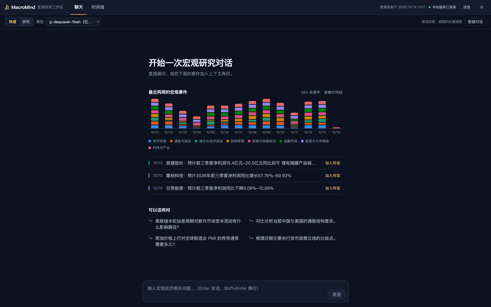
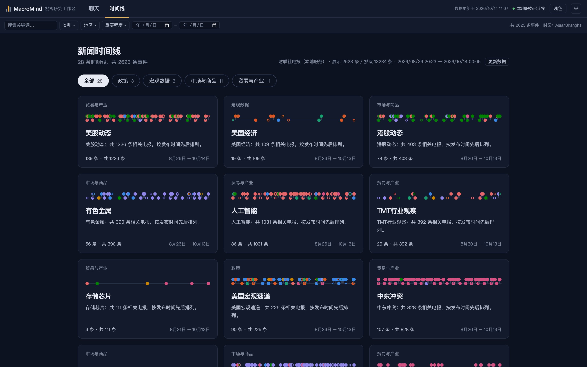
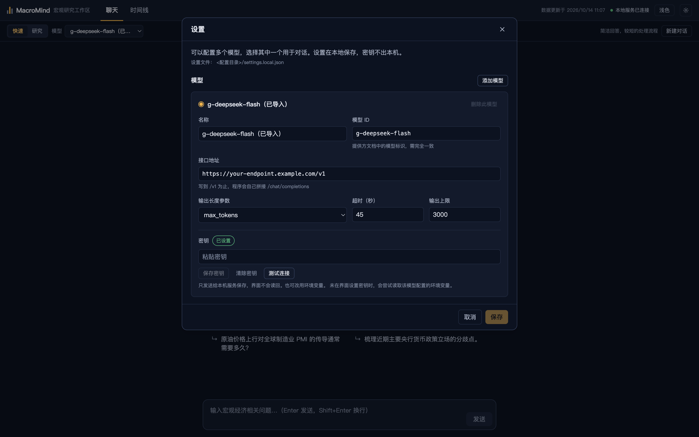
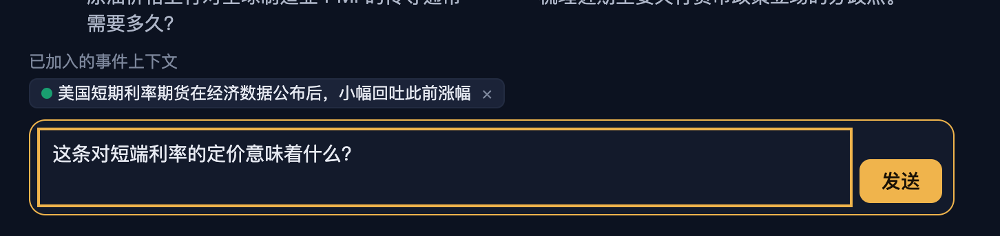
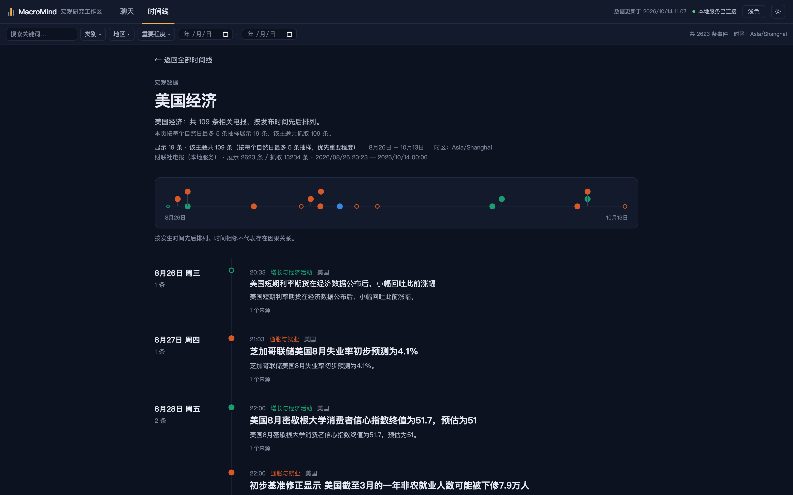
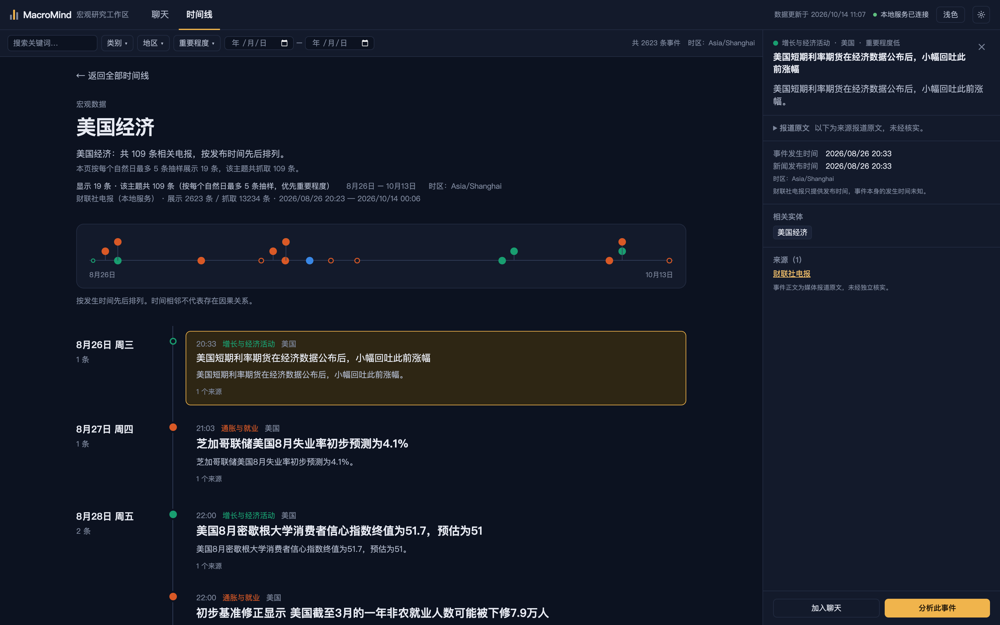
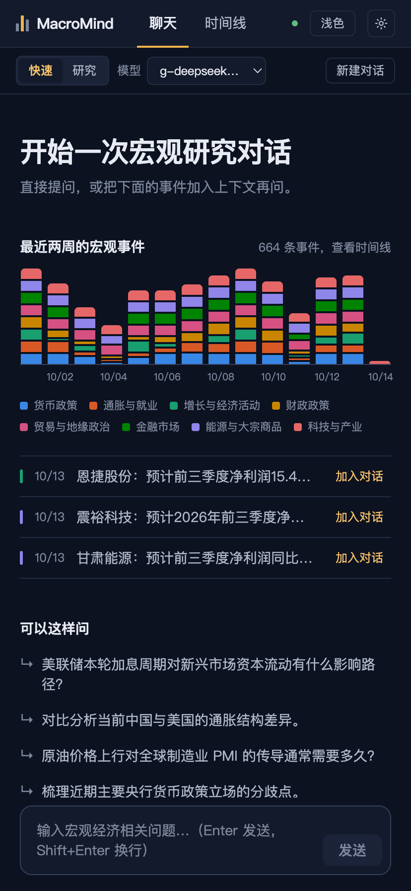
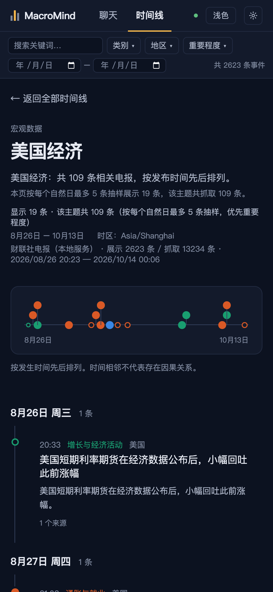

宏观研究工作区
把每天的宏观新闻整理成可追溯的事件脉络，并让分析模型 在同一屏内、基于这些事件作答。
它不替你做判断。它负责把「新闻事实」「事件之间的时间关系」「模型的回答」三种东西 分层摆好，让每一句话都能找到出处。
事件脉搏。每根柱是一天，柱高是当天采纳的事件量，柱内自下而上按类别堆叠—— 和产品聊天页空态里那根「最近两周的宏观事件」是同一种表示法，这里铺满整个覆盖窗口。 它也是产品里唯一的自发动效：只在进入时按时间顺序升起一次。
这是什么
一个桌面端的研究工作台，装在两件东西上：一个能接任意 OpenAI 兼容模型的聊天工作区， 一条由真实新闻构成的时间线。两者共用同一个事实底座。
它想解决的，是日常宏观研究里三个反复出现的麻烦。
- 新闻读了就散。每天几百条电报，读过之后留在脑子里的只有结论， 没有「这条是几月几号、和前面哪条是同一件事」。时间线把电报按真实时间戳和类别摆开， 同一件事归成一条脉络，可以顺着往下读。
- 问模型时，上下文靠手贴。工作区里可以把时间线上的事件直接 「加入对话」，事件会作为结构化上下文进入请求，而不是复制一段文字。
- 分不清哪句是事实、哪句是生成。电报正文原文、媒体报道这个属性、 事件发生时间未知这件事，全部在界面上标明，不混进模型的解读里。
当前数据规模
财联社电报 20,000 条原始抓取 → 采纳 13,234 条事件 → 展示快照 2,623 条，归成 24 条事件脉络， 覆盖 2026-08-26 至 2026-10-14。 全部为真实抓取数据，非演示。
两个页面
界面只有两个标签页，没有第三层导航。「聊天」是默认页， 「时间线」是画廊式的新闻组织。两边的状态是通的——时间线里选中的事件可以带进聊天。


一 · 聊天工作区
聊天区不是「接了个模型」，而是把一次分析请求拆成可控的几件事：用哪种模式、 用哪个模型、带上哪些事件、当前处在什么状态。
模式：快速与研究 模式改变的是请求本身，不只是界面提示
输入框上方是一组互斥的分段控件。切换模式会直接改写到请求里的输出上限与系统提示词， 两条路径的差别是实打实的：
| 模式 | 输出上限 | 要求模型做什么 |
|---|---|---|
| 快速 | 800 | 直接给简洁、重点突出的回答，控制在三段以内，不展开完整论证。 |
| 研究 | 3000 | 按固定结构输出：问题拆解 → 相关证据与数据（注明来源归属） → 多角度比较 → 结构化结论与不确定性说明。并明确要求区分「记录的事实」「归属于他人的主张」 「模型的解释」。 |
当前模式始终显示在输入区旁边，并配一句说明。切换只影响后续请求； 每条回答下方都记录它实际使用的模型与模式。
模型：多套配置，各自独立 设置里配一次，下拉列表即时生效，不用重启
可以并存多个模型，每个模型单独一套参数——接口地址、模型 ID、输出长度参数
（max_tokens 或 max_completion_tokens）、超时、输出上限。
模型显示名与提供方使用的模型 ID 分开填写，不对模型的可用性、速度或能力做任何猜测性描述。

密钥不出本机
写入的密钥由本地服务保存到 secrets.local.json（权限
0600，已 gitignore）。前端代码从头到尾不接触密钥，
界面只显示「已设置 / 未设置」。不含密钥的模型清单存在
settings.local.json，可以备份或外发。
也可以用环境变量提供密钥（CI 或习惯 shell 的场景）：设置里没写密钥时，
回退读取该模型的 api_key_env（默认
MACROMIND_LOCAL_API_KEY），该值只存在于本地服务进程。
本机模型（如 Ollama）走回环地址，不要求密钥。
配置会被校验，规则与服务端契约一致：协议仅支持 chat_completions，
非回环地址必须 https，URL 不能带账号密码、查询参数或锚点，超时 1–60 秒，
输出上限 128–16000，最多 20 个模型。校验失败返回逐项错误，不是一句「保存失败」。
每个模型可以单独「测试连接」探活；未配置密钥的远端模型仍会列出，
但标记为不可用并说明原因。
对话与状态 流式输出，五种状态在界面上一眼可分
- 输入。多行输入，Enter 发送、Shift+Enter 换行； 正确处理输入法组字状态——中文候选词未上屏时按 Enter 不会误发送。
- 发送之后。可以停止生成、重试失败的请求、复制回答、新建对话。 回答按 Markdown 渲染，表格、列表与来源引用可读。
- 状态。等待响应、生成中、已完成、已取消、请求失败五种状态各自明确。 取消请求或切换对话后，迟到的响应会被丢弃，不会窜进错误的会话。
- 失败不丢历史。请求失败后对话记录保留，可以直接重试。 本地服务未连接或没有可用模型时，界面直接说明是哪一种情况、并给出「打开设置」， 不做任何替代回答——宁可发不出去，也不给一份看不到出处的回答。
与时间线打通 事件作为结构化上下文进请求，不是复制一段文字
在事件详情面板点「加入聊天」，这条事件会以带类别、标题、发生时间的结构化形式 进入输入区上方的「已加入的事件上下文」，可随时移除。发送时它会被序列化进用户消息， 模型看到的是有出处的条目，而不是一段无来源的粘贴文本。

二 · 新闻时间线
时间线是这个工作区的重心。它分三层展开：主题画廊看全局， 脉络页读一件事的来龙去脉，事件详情看单条电报的出处与归属。
第一层 · 主题画廊 先看哪里有事，再决定读什么
顶部四个一级主题标签把新闻切成四块：政策、宏观数据、市场与商品、贸易与产业。 每张卡片是一条事件脉络，卡片上那条小线是该脉络事件的真实时间分布—— 密集处代表那几天这件事在持续发酵，空白处代表沉寂。这不是装饰， 是从缩略线就能看出「哪条脉络最近在动」。
第二层 · 脉络页 一条脉络，按发生时间往下排
点开卡片进入脉络页。顶部是一条可点击的时间分布带，点击任意刻度跳到对应事件； 下方按自然日分组，每日左侧标出日期、星期与当天条数，右侧是该日的事件卡。 每张卡显示时间、类别、地区、标题、摘要与来源数量。

第三层 · 事件详情面板 三类信息在视觉上分开摆
点开任意事件，右侧滑出详情面板。它的结构本身就是一种表态——把不同可信度的内容 放进不同的格子，而不是揉成一段流畅的文字：
- 标题与摘要，来自来源报道。
- 报道原文，默认折叠，展开即电报正文原样，并标注「未经核实」。
- 事件发生时间与新闻发布时间分开列出。电报只提供发布时间， 所以发生时间标注为未知，并写明原因，不臆造精度。
- 类别、地区、重要程度、相关实体，全部来自规则归类。
- 来源链接，指向可点开的原始报道。
底部两个动作是详情面板存在的意义：「加入聊天」把这条事件送进聊天上下文， 「分析此事件」直接带着它发起一次分析。

三 · 数据从哪来
时间线上的事件全部是真实抓取。链路是可复核的：每一步的产物都落盘， 归类过程本身可以逐条抽查。
last_time 向前翻页抓取财联社电报，请求间隔 1.5 秒，
单次运行上限 150 次请求。
界面取数有明确的优先级：本地服务 → 静态快照 → 演示数据。 前两者都是真实数据，只有都拿不到时才回退到一份明确虚构的演示事件， 并在界面上标注出来。时间线页右上角常驻显示来源、展示条数 / 抓取条数与覆盖时间范围。
八个类别 颜色只用来识别类别，不表示利多利空
类别是一级分类，颜色是它的标识符。这套颜色在整份界面里是唯一的彩色来源—— 除此之外整个工作区只有一种强调色。要说清楚的是： 颜色不代表事件对市场是利多还是利空，它只回答「这条属于哪一类」。
- 货币政策政策
- 财政政策政策
- 通胀与就业宏观数据
- 增长与经济活动宏观数据
- 金融市场市场与商品
- 能源与大宗商品市场与商品
- 贸易与地缘政治贸易与产业
- 科技与产业贸易与产业
归类口径 宁可漏，不可凑
- 完全不命中这 8 个宏观类别的电报直接丢弃，不做兜底归类。 栏目稿（盘中宝、风口研报、提醒电报、投资日历等）一并过滤。
- 每条事件都记录命中的关键词，界面上可以人工抽查它为什么被归到某个类别。
-
展示量有两层控制：快照按「每个自然日 × 类别最多 8 条」，脉络页按
「每个自然日最多 5 条」，都优先重要程度与阅读量。落选事件仍保留在
news.events.json里。 -
展示时区固定为
Asia/Shanghai，并在界面上显式写出—— 时间永远带着它的时区一起出现。
四 · 信任设计
这一类工具的失败方式通常不是算错，而是把话说得比证据更满。 所以界面里有一批专门用来「少说一点」的约束。
| 界面上的做法 | 避免的问题 |
|---|---|
| 时间相邻的提示语 | 脉络页与详情面板都写明「时间相邻不代表存在因果关系」，不因两条新闻挨着就暗示因果。 |
| 发生时间标为未知 | 电报只提供发布时间，就不给事件发生时间编一个精度。 |
| 正文归入「报道原文」 | 电报正文是媒体报道，标注未经独立核实，且不写进「Agent 的解释」，避免生成内容混进事实层。 |
| 不造评分与百分比 | 界面里没有影响评分、置信度百分比或来源数量以外的任何推断性数值。 |
| 演示数据必须标注 | 时间线回退到演示数据时，界面顶部直接说明「当前展示为演示数据（明确虚构）」。演示事件不使用伪造的有效来源链接。 |
| 每条回答记录来源 | 回答下方始终显示它用的模型与模式，不让人误以为换个模式只是换了说法。 |
| 不暴露密钥 | 密钥只写不读，前端代码不接触，只存在于本地服务进程。 |
五 · 运行与技术形态
技术栈是 React 19 + TypeScript + Tailwind CSS 4 + Vite。没有引入可视化库， 时间线的布局、抽样与定位全部是自己写的纯函数，并且有单元测试覆盖 （当前 66 项，覆盖时间线布局、归类规则、事件与脉络生成）。
| 形态 | 命令 | 说明 |
|---|---|---|
| 开发 | npm run server npm run dev |
本地服务 8787，前端 5173，/api 代理到本地服务。 |
| 生产（Web） | npm run build npm run server |
单进程同端口提供前端与 /api，浏览器打开 8787。已验证。 |
| 桌面应用 | npm run app:dist | 打包 macOS dmg/zip、Windows NSIS、Linux AppImage。Electron 主进程 fork 内置本地服务，只监听 127.0.0.1。未验证。 |
不启动本地服务时，npm run dev 仍可单独预览：时间线读取随构建发布的静态快照（真实数据），
聊天区则显示「未连接本地服务」，不发送请求。
本地服务只监听回环地址，提供 /api/health、/api/models、
/api/chat（SSE 流式）、/api/news 与
/api/settings 系列端点。桌面端与 Web 端共用同一份前端产物。
小屏 同一套界面，标签页切换
窄屏下两个面板改为标签页切换，切换时保留聊天草稿、已选事件、筛选条件与时间线位置， 事件详情以抽屉形式弹出。


六 · 现状与限制
这一节列的是已知的缺口，不是待办清单的复述。凡是在界面上看起来像能力、 实际上还没接上的地方，都写在这里。
| 项 | 状态 | 说明 |
|---|---|---|
| 聊天未接入 engine | 待处理 | 本地服务把对话直接转发到 OpenAI 兼容端点，不使用 engine 的证据库与方法框架。 研究模式显示的「收集来源 → 比较证据 → 整理分析」是服务端按固定时机发出的占位状态， 不代表实际检索了来源。这是当前最需要对齐的一处。 |
| 归类准确率未评估 | 待处理 | 关键词归类必然有误判（例如个别科技稿件被判进「贸易与地缘政治」）。 每条记录了命中词可以抽查，但没有做过准确率评估。 |
| 抓取依赖非官方接口 | 已知风险 | 财联社电报接口变化会导致抓取失效。抓取范围目前约 49 天，受单次请求上限限制。 |
| Electron 打包未验证 | 未验证 | 打包配置与外壳代码未经实际运行验证（开发环境无法下载 Electron 二进制）。 Web 形态已验证。 |
| 时间线的缩放手势未实现 | 功能缺口 | 原始需求中的日／周／月时间尺度、放大缩小、横向平移、密集事件聚合、 以及无障碍列表视图均未实现。当前是可点击的缩略分布带 + 按日分组的竖向列表。 |
| 主题切换的自动化检查失效 | 待处理 |
验收脚本里的主题断言恒为真，实际未验证；部分
*-dark.png 截图实为浅色主题。
|
| 真实新闻数据时间线 | 已完成 | 已从演示数据切换为财联社电报真实抓取，链路与口径见第三节。 |
一句话概括当前边界
时间线这一半是实的——真实数据、可复核的归类、明确的证据分级。 聊天这一半是通的——真实模型、真实流式、真实的模式差异——但它还没有接到 MacroMind 的证据库与分析框架上。这两半之间目前只有「事件上下文」这一条通道。
MacroMind 宏观研究工作区 · 产品简介。界面截图取自 2026-10-15 本地构建，
深色主题，时间为实际抓取数据的真实展示。设置页截图中的接口地址与配置路径已脱敏。
按 ⌘P 可打印为 PDF 或长图。